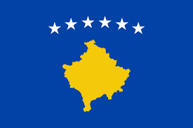
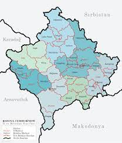
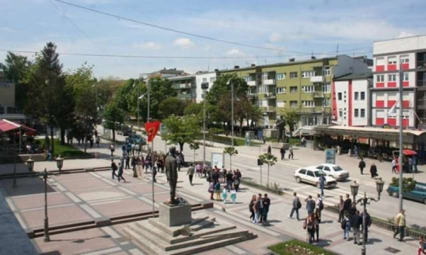
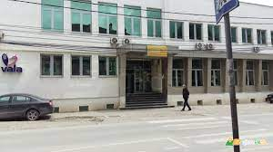

| GJILANI | |||
|---|---|---|---|
| VENDNDODHJA: | KOSOVE | Meso me shume |  |
| DISKTRITI: | Gjilan | Meso me shume |  |
| KRYETARI: | Alban Hyseni | Meso me shume | |
| SHTRIRJA: | 391.84 km2(151.29 sq mi) | Meso me shume | |
| POPULLACIONI: | Urban:54,239,Rural:35,939,Gjithsej:90,178 | Meso me shume |  |
| KODI POSTAL: | 6000 | Meso me shume |  |